6. Çünkü şeytan, sizin düşmanınızdır, siz de onu düşman sayın. O, kendi
taraftarlarını ancak ateş ehlinden olmaya çağırır.
7. İnkâr edenler için şüphesiz çetin bir azap var, îman edip iyi işler yapanlara da
mağfiret ve büyük bir mükâfat vardır.
“Gökleri ve yeri yaratan, melekleri ikişer, üçer, dörder kanatlı elçiler yapan
Allah’a hamdolsun. “O” (Allah), melekler yahut başkaları hangi “yaratmada” olursa
olsun vasıf ve beyânın ihâta edemediği işlerden hikmet ve iradesi gereği “dilediği
arttırmayı yapar. Şüphesiz Allah,” mümkün olan “her şeye” ziyâdesiyle“gücü
yetendir.”
1)
“Allah’a hamdolsun.”
Bütün hamdler Allah’a mahsustur, Allah’tan başkasına hamd edilmez. Bu ifâde her ne
kadar gerçekte Allah Teâlâ’nın kendi zâtıyla yine kendi zâtına hamd etmesi ise de ancak
bu, kulların Allah’a nasıl hamd edeceklerini onlara talim etmektedir. Bilinmelidir ki
“hamd” hem nimet ve hem de mihnet ve musibetle ilgilidir. Zira her mihnet ve musibetin
altında yine gizli bir nimet vardır. Mesela “hapşırmak” bir nimettir. Zira o bedende tüy
diplerindeki menfezlerin açılmasına, düşünme ve hatırlama kuvvetinin kendisinde
bulunduğu dimağ ve beyinde toplanan buhar ve rutûbetin bertaraf edilmesine vesîle olur.
Bu, baş ve beynin kriz ve buhranıdır. Aynı şekilde “ter” de hastanın bedeniyle ilgili
buhranıdır. Bundan dolayıdır ki şârî, hapşıranın hamd etmesini gerekli kılmıştır. İbn
Abbas (r.a.) der ki: Hapşırandan önce “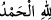 diyen baş ve diş ağrılarından korunur.
Yine “geğirmek” de bir mihnettir. Hadis-i şerifte şöyle rivayet edilmiştir: “Kim
hapşırdığı yahut geğirdiği vakit “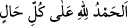 (Her hal ve şartta Allah’a hamd
olsun) derse, bu hamd cümlesi sebebiyle Allah o kimseden en hafifi cüzzam olan
yetmiş hastalığı uzaklaştırır.”[45] Geğirmek, midenin nefes almasıdır. Bu ise midenin
yemekle iyice dolmasından meydana gelir. Bu durum özellikle namazda ârız olursa dini
musibetlerden sayılır. Hz. Peygamber (s.a.)’in “Her halükârda Allah’a hamd olsun”
buyurması buna delâlet eder. Sonra Allah Teâlâ, hamdi öncelikle îcad ve yaratma
nimetiyle ilişkilendirdi. Zira her kemâl, bu îcad ve yaratma nimeti üzerine binâ edilmiş
olduğundan Allah’ın îcad ve yaratma nimetinin ötesinde başka bir nimet düşünülemez.
“Gökleri ve yeri yaratan” ifâdesinde “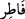 kelimesinin “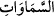 kelimesine izâfeti,
izâfet-i mahzadır. Zira burada ism-i fâil olan “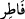 kelimesi, “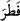 anlamında olup
“yarattı” mânâsındadır. Öte yandan “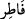 kelimesi, “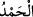 ” ifâdesindeki “Allah”
lafzının sıfatıdır. “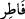 kelimesini izâfet-i gayr-i mahza kabul eden ulemâ ise bu
kelimenin “Allah” lafzından bedel olduğunu söyler ki bu durum “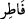 gibi müştak
kelimelerde nâdir olur. “ kelimesinin mânâsı önceden geçmiş bir misal olmaksızın
ilk defa îcad eden, yaratan demektir. “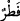 yahut “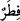 kökünden gelir. Yaratmak,